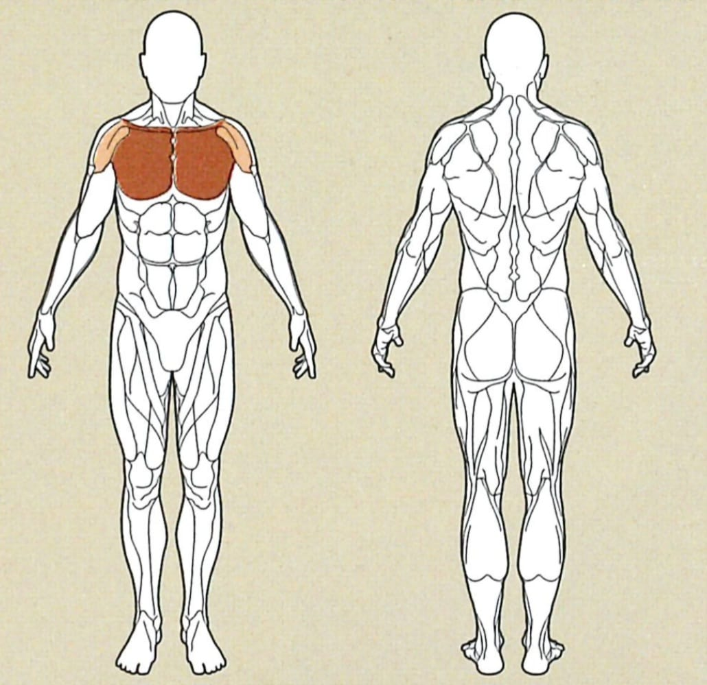

Fliegende Bewegung - Kabelturm

Ausgangsposition
● Den Kabelzug auf die gewünschte Höhe einstellen:
○ obere Brust
■ stelle die Höhe des Kabelzugs auf Hüfthöhe ein
○ Mittlere Brust
■ stelle die Höhe des Kabelzugs auf beiden Seiten auf Brusthöhe ein
○ untere Brust
■ Stelle die Höhe des Kabelzugs auf Kopfhöhe ein
● Greife beide Griffe, und stelle dich in die Mitte der Beiden Kabeltürme.
● winkle nun deine Arme leicht an und halte dabei deinen Rücken gerade.
Ausführung
Drücke nun die Griffe, in einer kreisförmigen Bewegung, nach oben, mittig vor die Brust oder, wie in der
Grafik gezeigt, nach unten.
Achte darauf, dass sich deine Hände vor der Brust berühren sollten.
Rückführung
Kehre nun mit einer kontrollierten kreisförmigen Bewegung wieder in die Ausgangsposition zurück.
Achte während der gesamten Ausführung darauf, dass sich beide Arme während der gesamten Bewegung
parallel bewegen, und gleichmässig gebeugt sind.